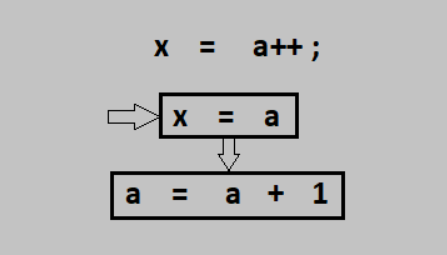

Operadores
Los operadores son símbolos especiales en Java que realizan operaciones entre uno o varios operandos y devuelve un resultado. Uno de los más usados es el operador suma (+) como hemos visto en clases anteriores.
Operando
Es cualquier término, que puede ser una variable o valor y que es manipulado por un operador.
int valor = 8;
int numero = valor + 12;
En el ejemplo anterior, + es el operador y valor y 12 son los operandos. valor + 12 es una expresión que devuelve el resultado de 20.
Tipos de operadores en Java
Java proporciona muchos tipos de operadores que se pueden usar según la necesidad. Se clasifican según la funcionalidad que brindan. Algunos de los tipos son los siguientes:
Operadores aritméticos, unarios, de asignación, relacionales, lógicos, etc.
Operador de asignación (=)
Es uno de los operadores más usados. Se usa para asignar un valor a cualquier variable. Tiene una asociación de derecha a izquierda, es decir, el valor dado en el lado derecho del operador se asigna a la variable de la izquierda y, por lo tanto, el valor del lado derecho debe declararse antes de usarlo o debe ser una constante.
Operadores aritméticos
Se utilizan para realizar operaciones aritméticas simples.
- *: Multiplicación
- /: División
- %: Modulo
- +: Suma
- –: Resta
Operadores unarios
Los operadores unarios solo necesitan un operando. Se usan para incrementar, disminuir o negar un valor.
- ++: Operador de incremento, utilizado para incrementar el valor en 1. Hay dos variedades de operador de incremento.
- Pre-Incremento: el valor se incrementa primero y luego se calcula el resultado.

int a = 8;
++a;
- Post-Incremento: el valor se usa por primera vez para calcular el resultado y luego se incrementa.
int a = 8;
a++;

- --: Operador de decremento , usado para incrementar el valor en 1. Hay dos variedades de operador de incremento.
- Pre-Decremento: el valor se disminuye primero y luego se calcula el resultado.
- Post-Decremento: el valor se usa por primera vez para calcular el resultado y luego se disminuye.
- ! : Operador lógico “no”, utilizado para invertir un valor booleano.
Abreviaciones
En muchos casos, el operador de asignación se puede combinar con otros operadores para construir una versión más corta de la declaración llamada Declaración Compuesta (Compound Statement).
- += , para sumar el operando izquierdo con el operando derecho y luego asignarlo a la variable de la izquierda.
int a = 5;
a += 5; // a = a + 5;
- – = , para restar el operando izquierdo con el operando derecho y luego asignarlo a la variable de la izquierda.
int a = 5;
a -= 5; // a = a - 5;
- *= , para multiplicar el operando izquierdo con el operando derecho y luego asignándolo a la variable de la izquierda.
int a = 5;
a *= 5; // a = a * 5;
- / = , para dividir el operando izquierdo con el operando derecho y luego asignarlo a la variable de la izquierda.
int a = 5;
a /= 5; // a = a / 5;
- % = , para asignar el módulo del operando izquierdo con el operando derecho y luego asignarlo a la variable de la izquierda.
int a = 5;
a %= 5; // a = a % 5;
Operadores relacionales
Estos operadores se utilizan para verificar relaciones como igualdad, mayor que, menor que. Devuelven el resultado booleano después de la comparación.
- ==, Igual a: devuelve verdadero si el valor del lado izquierdo es igual al lado derecho.
- !=, No igual a: devuelve verdadero si el valor del lado izquierdo no es igual al lado derecho.
- <, menos que: el resultado verdadero si el valor del lado izquierdo es inferior al del lado derecho.
- <=, menor o igual que: devuelve verdadero si el valor del lado izquierdo es menor o igual que el lado derecho.
- >, Mayor que: devuelve verdadero si el valor del lado izquierdo es mayor que el lado derecho.
- >=, Mayor que o igual a: regresa verdadero si el valor del lado izquierdo es mayor o igual que el lado derecho.
int a = 20, b = 10;
System.out.println("a == b :" + (a == b));//Devuelve falso, porque a no es igual a b
Operadores lógicos
Estos operadores se utilizan para realizar operaciones “lógicas AND” y “lógicas OR”. Se usa ampliamente para probar varias condiciones para tomar una decisión. Los operadores condicionales son:
- &&, AND lógico: devuelve verdadero cuando ambas condiciones son verdaderas.
- || , O lógico: devuelve verdadero si al menos una condición es verdadera.
int a = 20, b = 10, c= 10;
System.out.println((b == c && a == c)); //False
System.out.println((a == c && b == c)); //False
System.out.println((a == b || b == c)); //True
Operadores de bits
Precedencia de operadores
Conversiones de tipo (casting entre tipos nativos)
Es una forma de convertir un número de un tipo a otro tipo de dato. Para hacerlo ponemos en paréntesis el tipo de dato al que queremos convertirlo.
byte miByte = (byte) (14 / 2);